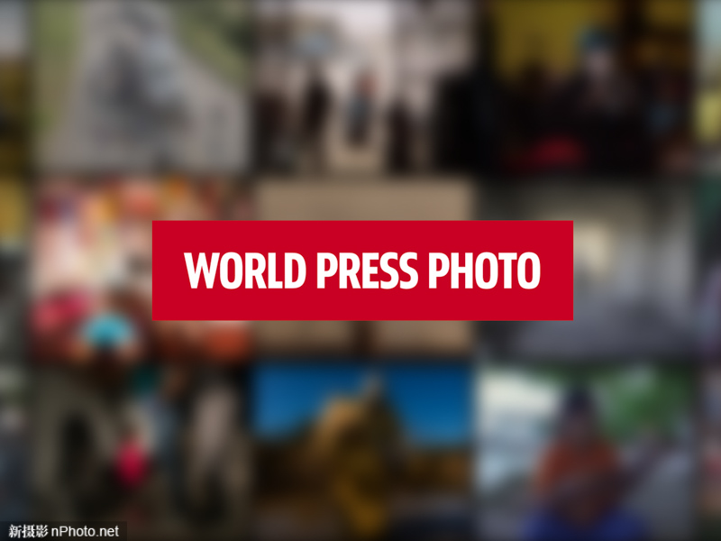
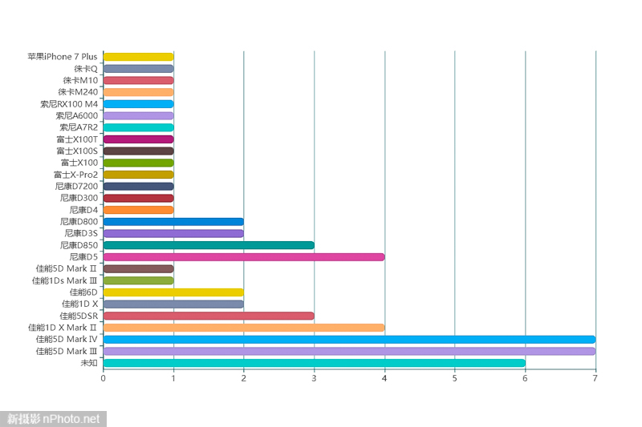

来源：新摄影网
近日，第62届世界新闻摄影比赛（荷赛）公布了2019年该赛事的最终获奖结果，或许大家会好奇这些优秀的新闻图片都是摄影师用什么相机拍出来的。据统计，2019年荷赛公布的8大类别45组照片之中，有6组新闻照片没有图片信息无法统计。而在其余各组获奖图片之中，佳能、尼康单反相机联手统治了2019年荷赛。
 在2019年世界新闻摄影奖获奖作品之中，佳能EOS 5D Mark Ⅲ、5D Mark Ⅳ均有7位摄影师使用，两款热门机型使用率并列第一。佳能EOS 5D Mark Ⅲ相机发布于2012年3月份，现在来看该款机型依然宝刀不老，备受众多新闻摄影师青睐。此外，佳能EOS-1D X Mark Ⅱ、5DSR两款机型也有着不少的使用者，前者定位高速度，后者定位高像素。 再谈尼康机型，本届荷赛获奖摄影师最为钟爱尼康D5、D850。同样，前者前者定位高速度，后者定位高像素。而小巧轻便的富士相机在荷赛获奖摄影师之中也有着不少的粉丝，其中富士X-Pro 2及X100系列最受追捧。除此之外，索尼、徕卡两个品牌均有3款机型上榜，而苹果iPhone 7 Plus则成为唯一上榜的手机。